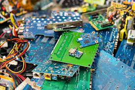

this site is an imformational site about E-waste and it harm to people and the envirment. in this web site you will find genral information about the problem, learn intesting stats, and finaly find a collection of acadmic paper and news sources if you wis hto learm mor then what the sit can offer you.
For some background if you dont know what e-waste is. E-waste is proplem of how to safely handle and get rid of old tech trash. as we rapitly advance our technology level and use it at ever increasing we also leave the old tech hto sit and rot away at the same exponetal rate. but just leaving it can cause massive problems for both people and the envirment. that why we need to find ways to reduce, reuse, and recycale our old tech.
